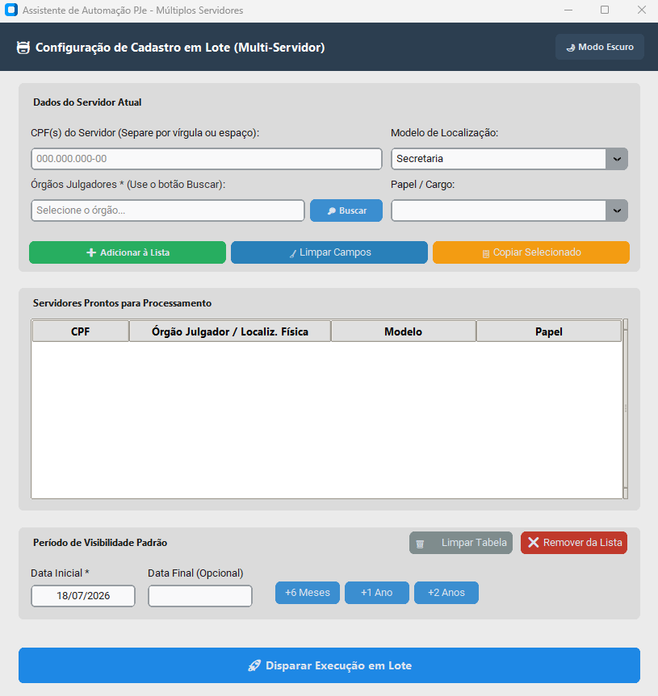
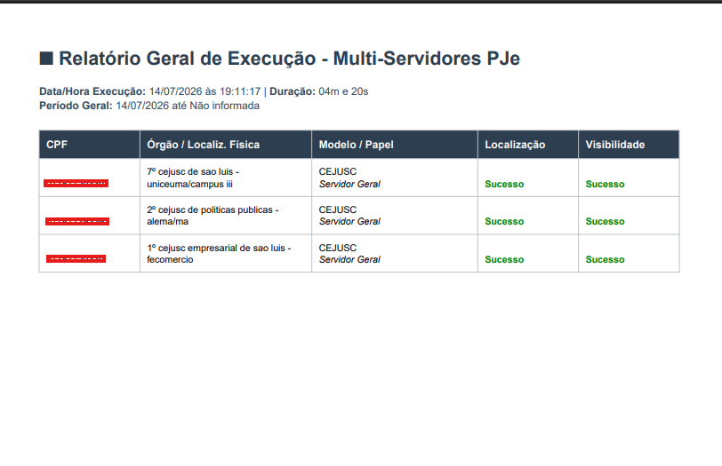
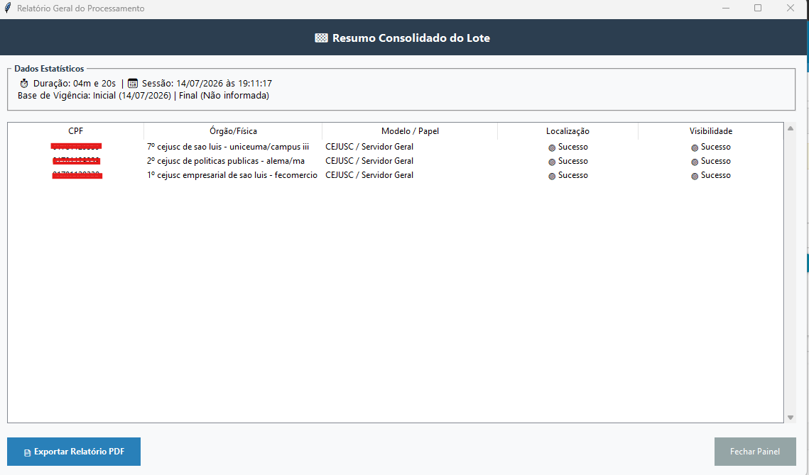
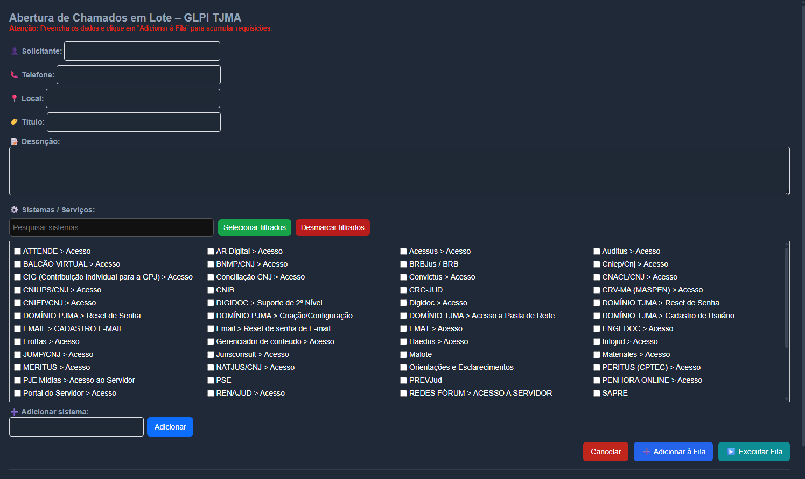
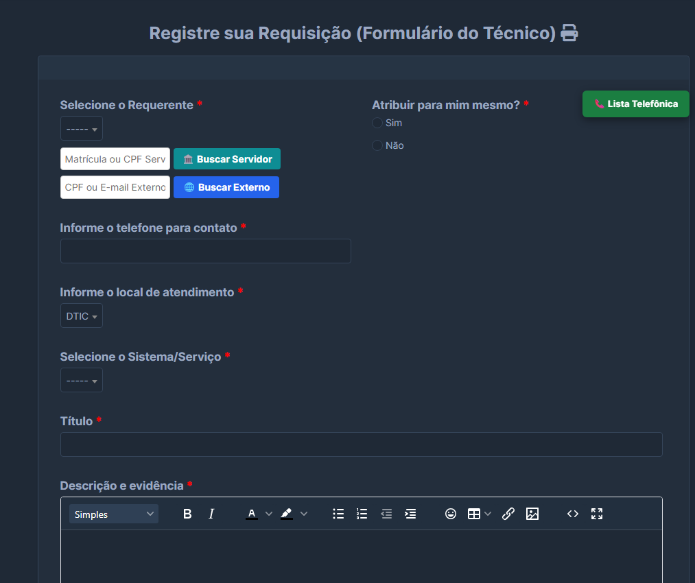
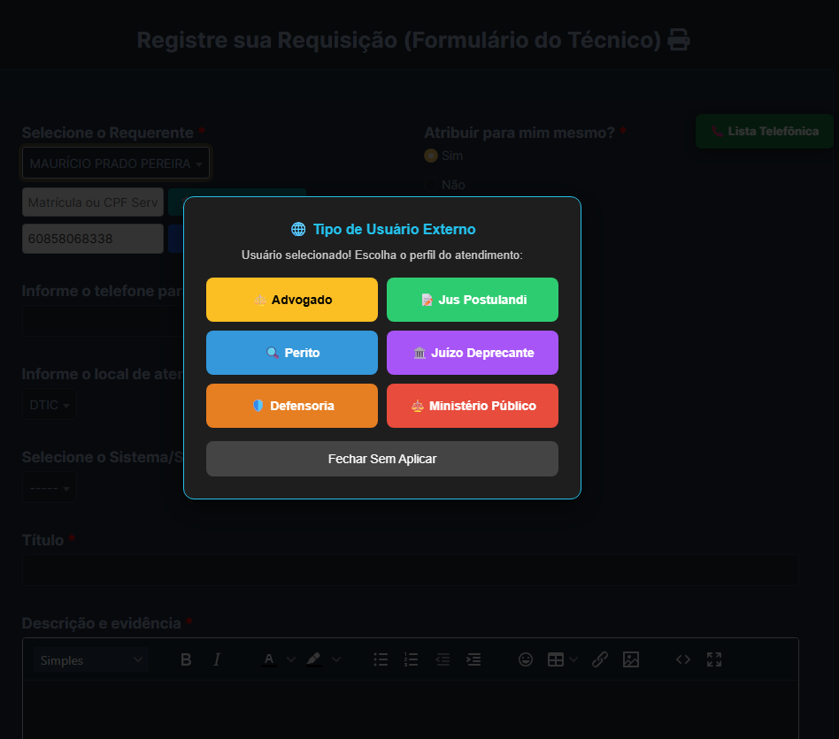
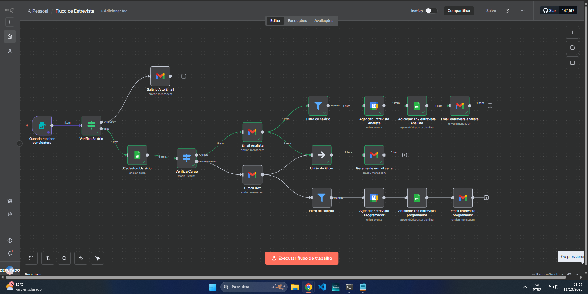

💻 Portfólio – Mauricio Prado Pereira
👋 Olá, seja bem-vindo ao meu espaço!
Sou Mauricio Prado Pereira, profissional de Tecnologia da Informação focado em arquitetar soluções que eliminam o trabalho manual e transformam dados brutos em inteligência operacional.
O que eu faço:
- ⚡ Automação de Processos: Desenvolvimento de robôs eficientes com Python (Selenium/Playwright) e scripts customizados de navegação.
- 📊 Engenharia de Dados: Extração, tratamento e modelagem avançada de dados corporativos integrados ao Looker Studio.
- 🖥️ Sistemas & Interfaces: Criação de ferramentas desktop intuitivas com PyQt6/Tkinter e web apps dinâmicos.
- 📄 Geração Automatizada: Emissão inteligente de relatórios e documentações em PDF via ReportLab.
🚀 Aplico stacks modernas como n8n, JavaScript (Tampermonkey) e Google Apps Script para injetar produtividade e governança por onde passo.
🌱 Foco atual: Evolução contínua em arquiteturas de automação, transformação digital e soluções inteligentes focadas em eficiência operacional e setor público.
📄 Meu Currículo
🎯 Resumo Profissional
Profissional entusiasta em Tecnologia da Informação, buscando oportunidades para aplicar conhecimentos acadêmicos e desenvolver habilidades na área. Graduado em Sistemas de Informação, possuo sólida base teórica e estou ansioso para contribuir positivamente em ambientes profissionais desafiadores.
🎓 Formação Acadêmica
Centro Universitário Santa Terezinha (CEST)
Fucapi
💼 Experiência Profissional
- Cadastro de Usuários e Tratamento de Erros Processuais.
- Controle de Usuários e Resolução de Erros de Tramitação.
- Instalação e configuração de software.
- Orientar usuários sobre o uso adequado de software.
- Atuação focada em Helpdesk e Service Desk.
- Instalação e configuração de hardware e software.
- Realização de verificações e manutenções preventivas em equipamentos.
- Diagnóstico e resolução de problemas técnicos com hardware, software ou rede.
- Monitoramento de sistemas para identificar possíveis problemas e orientação a usuários.
- Instalação e configuração de hardware e software.
- Realização de verificações e manutenções preventivas em equipamentos.
- Diagnóstico e resolução de problemas técnicos com hardware, software ou rede.
- Monitoramento de sistemas para identificar possíveis problemas e orientação a usuários.
🚀 Projetos em Destaque
Assistente de Automação PJe – Múltiplos Servidores



Extensão de Automação para GLPI

Automação de Fluxo e Validação de Dados: Formulário Inteligente para Abertura de Chamados (GLPI)
Ao inserir a Matrícula ou o CPF do funcionário institucional, o script realiza uma consulta automática na base de dados. O sistema não apenas identifica o requerente, mas também preenche de forma automatizada o local de atendimento vinculado àquele servidor. Com base na localidade identificada, o formulário realiza uma segunda busca lógica e autopreenche instantaneamente o campo de telefone/contato correspondente àquele setor. O técnico não precisa digitar uma única linha de informação geográfica ou de contato.
Fluxo Inteligente "Buscar Externo" com Verificação de Cadastro:
Para atender o público externo, o botão realiza uma varredura na base de dados (via CPF ou e-mail).
Se o usuário já possuir cadastro: Seus dados são puxados automaticamente para o chamado.
Se o usuário não for encontrado: O sistema intercepta o fluxo e abre dinamicamente uma tela de cadastro integrado na própria interface. Assim que o técnico conclui o registro rápido do novo usuário externo, o sistema retorna ao formulário principal e continua o processo de abertura do chamado sem perda de progresso ou quebra de navegação.


Automatização de Processos de RH

Automação de Consultas Online & Web Scraping
Engenharia de Dados com Planilhas & Looker Studio
Análise e Validação de Senhas
Monitoramento de Editais (Web Scraping + Telegram)
🛠️ Stack Tecnológica & Competências
🐍 Desenvolvimento & Automação
Linguagens principais: Python, JavaScript (ES6+), SQL
Automação Web: Selenium WebDriver, Playwright, Tampermonkey
Integrações & No-Code: n8n, Google Apps Script
🖥️ Engenharia de Interfaces (UI/UX)
Web Applications: Interfaces Web Responsivas, HTML/CSS
Desktop: PyQt6, Tkinter
Mobile Frameworks: Flutter
📊 Dados & Business Intelligence
Analytics: Google Planilhas Avançado, Looker Studio
Data Manipulation: Pandas, NumPy
Reporting: Geradores dinâmicos de relatórios PDF (ReportLab)
⚙️ Infraestrutura & Operações
Plataformas: Sistemas de ITSM/Service Desk (GLPI), ERPs
DevOps Básico: Git, GitHub Actions (Automações Cron/CI)
Segurança: Hashing, Consumo de APIs RESTful seguras
📬 Vamos construir algo juntos?
mp243822@gmail.com
📱 Telefone / WhatsApp
(98) 98489-2928
📍 Localização
São Luís - MA